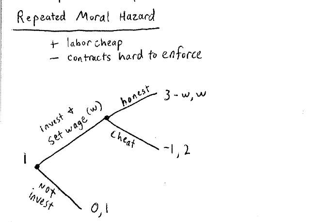

Lecture 22
这一节是上一节的延续，还是关于合作。
本节最关键的公式：
gain if cheat today [value of relation after cooperation] - [value of relation after cheating]
右边的式子第一项表示的是promise，第二项表示的是threat。
扳机策略（grim trigger）
有下面的囚徒困境博弈：
| C | D | |
|---|---|---|
| C | 2, 2 | -1, 3 |
| D | 3, -1 | 0, 0 |
扣扳机策略：
如果前面一直合作，那么一直合作；一旦对方叛变，以后都不合作。
为了让双方有合作共赢的动机，假设每轮有的概率进行下一轮的博弈（实际上还有不同的方式来激励下一轮的博弈）：
假设博弈无数轮：
最后得到
lesson:
- 如果使用扳机策略（背叛的代价），并且继续合作的概率大于（合作的动机），我们能够在囚徒困境中达到合作的关系。
- 为了未来提供合作，必须提供充足的动机。
一回合惩罚机制
如果之前一直合作，那么就一直合作；一旦产生叛变，下一回就叛变，经过一个回合后继续合作，相当于增加一个回合的惩罚。
那么上面的公式为
求解出来
lesson:
如果惩罚的力度越小，那么未来合作的概率应该越大。反过来说，如果未来的合作机会不明朗，那么就增加惩罚力度。
市场聘用
一个跨国公司决定在某地进行投资和雇佣，如果进行投资，那么应该给工人多少的薪水？

投资的分额假设是1
如果不进行投资，那么跨国公司不赚钱，工人当地的薪水为1；
若进行投资，如果工人携款潜逃了，那么收益矩阵为(-1, 2);
如果双方进行合作，那么收益是(3-w, w)。
考虑到下一次合作的概率为。
那么得到公式：
解的
如果，那么只有一次合作，那么工人一定携款潜逃。
如果，那么这个跨国公司就相当于是本地开的，w = 1。
- 如果想要有好的表现，那么必须有奖励机制。（这里应该cue研究生导师，别想用国家补助骗我好好干活）
- 奖励的大小是与未来前景正相关的。